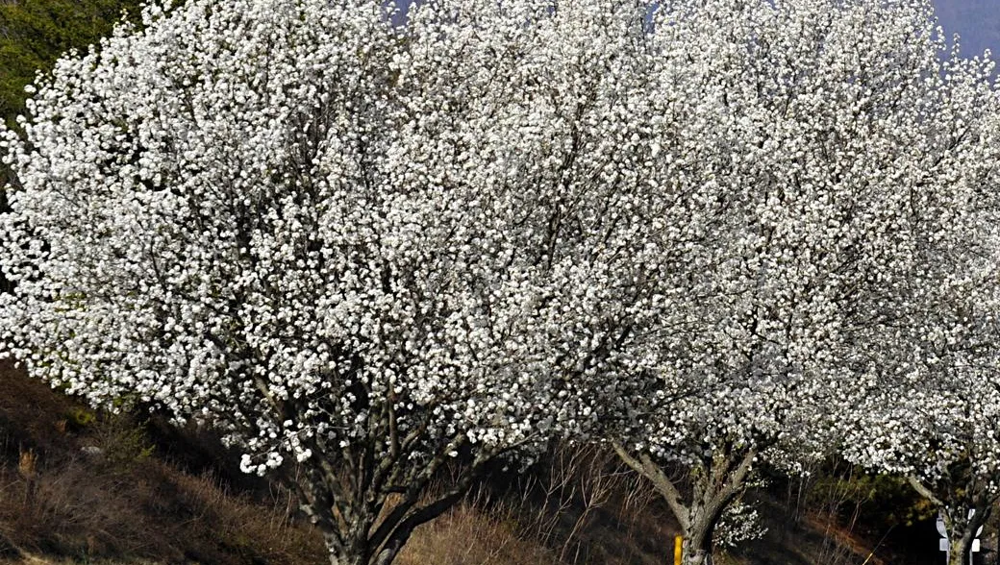

Bradford Pear
Pyrus calleryanaBradford Pear trees are invasive in North Carolina, thriving in diverse conditions and spreading widely. Recognizable by their white flowers and strong odor, they are often seen as nuisances.
Prone to breaking in storms, they frequently litter yards and neighborhoods.
